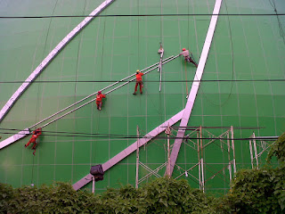

Kian berkembangnya kemajuan zaman, mewujudkan banyak bahan atau material pelengkap yang dapat mempercantik hunian atau daerah usaha anda. Banyak material pendukung yang bisa diaplikasikan seperti kaca, parket lantai kayu dan masih banyak lagi. Tak hanya memperindah, tetapi material pelangkap hal yang demikian bisa memberi garansi keamanan pada penghuni di dalamnya. Fungsi utama kaca yakni sebagai pencahayaan alami dan juga sebagai bagian dari keindahan bangunan. Banyak jenis dari kaca yang dapat di pakai untuk banguan maupun rumah tinggal.
Tak cuma kaca, sekarang juga sudah hadir material penyokong bagi bangunan yang sedang banyak di bangun adalah material parket lantai kayu jati. Tidak cuma material kaca kini juga terdapat material kayu atau parket lantai kayu jati. Berikut ini sedikit penjelasan mengenai beraneka tipe kaca dan fungsi kaca dan juga parket lantai kayu jati yang dapat anda temukan.
Jasa Pemasangan Railing Kaca
railing kaca Medan merupakan opsi yang tepat dikala Anda menghendakin desain interior rumah yang minimalis. Tidak konsep rumah modern ketika ini, kebanyakan rumah dibangun dengan desain minimalis. Anda bisa memilih desain sesuka hati Anda. Malah aksesoris seperti pada pegangan tangga malahan tidak terbuat dari bahan kayu lagi melainkan kaca dan aluminum. Mereka tak lagi membikin pagar tangga atau balkon dari kayu. Kaca tipe yang satu ini telah familiar dengan ketahanannya. Tapi, bukan cuma teladan yang sebaiknya Anda jadikan pertimbangan saat berkeinginan memesan railing kaca Medan ini. Pun juga bahan yang dipakai.
Anda bisa memilih kaca dengan mutu terbaik. Tidak ini tidak hanya ditentukan oleh ketebalan atau harga melainkan juga oleh variasi. Ada kaca tempered yang sekarang diminati banyak orang. Kaca ini sangat kuat dan juga aman. Dengan demikian, pecahan tidak akan melukai siapapun. Apabila kaca, amati juga aluminum yang menjadi piguranya. Kini pasti, railing kaca Medan ini menjadi pilihan yang tepat. Bila memberikan kesan minimalis pada interior rumah, ini juga membuat rumah Anda nampak lebih nyaman untuk diwujudkan tempat tinggal.
Harga yang betul-betul ekonomis serta kwalitas terbaik yang telah terjamin membuat anda tidak akan menyesal membeli railing kaca Medan di dis.or.id. Tentu dengan harga yang murah tapi konsisten berkelas.
Info Pemesanan Selengkapnya
Google Maps: https://www.google.com/maps/d/viewer?mid=1W14inZYnfBEjAU3RL6mMdLOdyHyt3uKR&ll=-7.27380280025364%2C112.65243155000007&z=18
Note: https://www.facebook.com/notes/distributor-of-industrial-supply/kontraktor-jasa-pemasangan-railing-tangga-kaca/1785722898394256/
Event: https://www.facebook.com/events/1865522363760219/
Distributor, Supplier & Jasa Pasang Kanopi Kaca
Pintu Kaca Shower pada kamar mandi merupakan salah satu opsi yang bagus untuk desain interior kamar mandi modern. Anda bisa memilih kanopi kaca yang cocok dengan kebutuhan dan harapan anda. Atap kaca skylight ditujukkan untuk mendapatkan sinar alami UV yang mempunyai fungsi sebagai penerangan dalam sebuah ruang. Jadi telah tak heran lagi semua orang mau mencari harga yang amat kompetitif untuk menyesuaikan budget atau anggaran mereka masing – masing untuk membikin produk canopy kaca. Ada sebagian alasan kenapa Pintu Kaca Shower banyak digunakan salah satunya merupakan kaca lebih terlihat bersih dan rapi dan juga lebih mudah dalam perawatannya. Kalau tembus pandang, kaca meresap cahaya yang masuk sehingga kian tebal kaca maka semakin sedikit cahaya yang dapat melewatinya, karenanya sifat transparannya makin berkurang.|Di samping pintu kaca shower akan membuat kamar mandi kecil nampak lebih besar. Pada atap akrilik, perembesan sinar yang terjadi demikian kecil sehingga walaupun ketebalannya bertambah, sifat transparannya tidak banyak berubah. Atap akrilik atau bisa juga disebut atap kaca acrylic ini banyak ditemukan di sebuah bangunan rumah, seperti ruko, apartemen, restoran, mall, hingga bangunan gedung.
Bila itu, kanopi juga dapat melindungi mobil dan kendaraan lain anda. Tidak anda sedang mencari kanopi kaca, anda dapat seketika mengunjungi dis.or.id.
Distributor & Supplier Kaca Shower
Kaca shower adalah kotak atau alat yang berfungsi sebagai penyekat ruang khusus untuk kamar mandi. Dengan mengaplikasikan kaca shower pastinya kamar mandi yang dimiliki akan lebih terlihat mewah dan menjadi sekat antara zona berair dan zona kering. Shower screen adalah kotak atau alat yang berfungsi sebagai penyekat ruang khusus untuk kamar mandi. Penyekat ini akan memisahkan antara daerah basah yang diterapkan untuk mandi atau meletakan shower dan tempat lain yang yaitu area kering. Kecuali ini akan berpengaruh kepada biaya yang akan dikeluarkan untuk membayar tukang.
Dis.or.id menyediakan kaca shower dengan kwalitas premium sehingga ketika dipasang akan langsung menonjol mewah. Disana anda bisa menerima kaca shower yang pastinya layak untuk kamar mandi anda. Anda dapat buktikan sendiri.
Distributor, Supplier & Jasa Pasang Kanopi Kaca
Seiring dengan perkembangan zaman di dunia properti, sekarang kanopi kaca sudah berkembang pesat mengikuti arsitektur modern. Diantaraya adalah kaca tempered 8 mm, kaca tempered 10 mm clear, kaca tempered 12 mm clear, kaca laminated 12 mm clear, kaca laminated 5 mm + 5 mm clear non tempered kaca, kaca laminated 5 mm + 5 mm tempered clear dan masih banyak lagi. Dan sensasi mandi menjadi lebih asik untuk dirasakan. Cara ini memang desain shower berbahan kaca memang lebih banyak diaplikasikan ketimbang desain shower berbahan tirai. Apabila tembus pandang, kaca menyerap sinar yang masuk sehingga kian tebal kaca karenanya kian sedikit sinar yang dapat melaluinya, maka sifat transparannya makin berkurang.|Di samping pintu kaca shower akan membikin kamar mandi kecil tampak lebih besar.
Disana anda bisa mendapatkan atap kanopi kaca dengan kualitas terbaik dan harga relatif murah. Bila itu, kanopi juga dapat melindungi kendaraan beroda empat dan kendaraan lain anda. Banyak bangunan seperti gedung perkantoran, perumahan, ruko dan apartement yang menerapkan kanopi kaca tempered. Bila fungsi utama kanopi sebagai pelindung untuk bangunan tersebut, pemasangan kanopi kaca juga dapat membikin bangunan menjadi nampak lebih cantik dan menarik, apalagi menerapkan konsep yang sama dengan konsep rumah minimalis. Sesudah kaca untuk atap kanopi cukup digemari. Tak anda sedang mencari kanopi kaca, anda dapat segera mengunjungi dis.or.id.
Jasa Maintenance Kaca

Jasa maintenance kaca menawarkan pelayanan perawatan bahan bangunan yang terbuat dari kaca. Lazimnya ditahui banyak pemilik gedung kaca yang mau merawat bangunan. Daya yang di pakai untuk jasa maintenance kaca diantaranya godole, rope access, crane, dan scaffolding.
Lebih dari itu, Jika spesialis yang dimilik oleh dis.or.id juga dapat membetulkan kaca yang rusak. Jikalau juga dengan warna dan format kaca.
Untuk itu, alat-alat patut komplit sehingga kami cakap membersihkan segala sudut gedung. Dis.or.id memiliki semua tenaga spesialis yang di rekrut hanya mereka yang profesional yang tahu persis bagaimana cara menerapkan alat dan bagaimana membersihkan kaca gedung bertingkat. Selain hanya dalam hal membersihkan kaca, mereka juga sanggup mengerjakan perbaikan serta penggantian kaca yang mengalami kerusakan.
Jasa Pemasangan Kaca Tempered
Kaca Tempered ialah salah satu jenis kaca dari sekian banyak macam kaca yang sering kali diterapkan untuk jendela, pintu, dan partisi. Dibutuhkan kaca ini diciptakan dari kaca float bermutu tinggi via pengerjaan pemanasan thermal di mana kaca dipanaskan hingga pada titik lunak kemudian didinginkan dengan kencang. Dengan pengerjaan pendinginan yang kencang membikin kaca memiliki kelenturan dan energi yang bagus kepada tekanan di kedua sisi permukaan kaca. Sementara itu, untuk rumah hunian, bagian dari rumah seperti kamar mandi serta kanopi lazimnya terbuat dari kaca tempered. Namun dulu hanya gedung perkantoran atau pusat perbelanjaan modern saja yang memakai ragam kaca ini, sekarang rumah hunian juga telah dibangun dengan kaca tempered.
Harga untuk tiap-tiap pemasangan dijamin termurah dan hasil proses yang cocok dengan harapan anda. Disana anda bisa memanfaatkan jasa pemasangan kaca tempered untuk semua tipe bidang maupun bangunan.
Distributor & Supplier Pintu Kaca
Kini sudah hadir ratusan pintu kaca dengan desain yang berbeda-beda yang bisa di buat dan di pesan, entah itu pintu kaca frameless (tanpa pigura) atau pintu kaca dengan bingkai. Banyak orang yang lebih menyenangi dengan contoh pintu kaca minimalis, yaitu pintu kaca frameless. Dengan bermacam-macam varian frame seperti pigura kayu atau aluminium dan tanpa bingkai atau frameless yang ialah desain pintu kaca tanpa pigura. Kini tersebut dapat terbuat dari kayu atau aluminum. Tersedia sebagian variasi kaca dengan kwalitas yang terbaik, mulai dari kaca tempered hingga yang non-tempered. Anda tinggal tentukan saja figur pintu kaca seperti apa yang berharap Anda miliki.
Amati Ukuran serta ketebalan menyesuikan dengan kemauan Anda.
Kaca yang di gunakan merupakan kaca dengan kwalitas terbaik. Anda dapat memilih kaca tempered yang sekarang ini sedang naik daun. Untuk budget yang lebih sedikit, Anda bisa memilih jenis kaca non-tempered.
Jual Kaca Cermin
Kaca cermin tak hanya berfungsi untuk bercermin saja melainkan juga sebagai pemanis ruangan. Kaca cermin juga dijadikan untuk yang lain seperti pintu. Banyak desain menarik dari cermin yang bisa Anda pilih di sini. Untuk bangunan bertingakat, terutama diaplikasikan pada macam dinding kaca. Ada cermin yang didesain unik seperti penyerupai daun, oval, dan lain sebagainya. Untuk membikin ruangan private, maka kaca ini transparan jika dipandang dari dalam. Sekarang perlu diamati juga adalah apakah Anda berkeinginan memiliki kaca cermin desain minimalis atau yang elegan.
Ada yang terbuat dari plastik, kayu, dan aluminum. Akan lebih menarik lagi seandainya Anda memakai kaca cermin ini sebagai bahan utama furniture. Sementara itu, Anda yang berada di dalam ruangan bisa memperhatikan orang lain yang ada di luar. Dis.or.id menyediakan kaca cermin yang dapat anda beli dengan harga yang amat murah dan dengan kualitas terbaik. Disana anda dapat mendapatkan kaca cermin yang pantas dengan kemauan anda.
Distributor & Supplier Pintu Lipat Kaca
Bukan hanya bagian depan saja yang dipasang pintu kaca lipat tapi komponen dalam juga dapat. Lalu, berapakah harganya? Anda mungkin menduga bahwasannya kaca ini ditawarkan dengan harga selangit. Apalagi seandainya taman Anda terbuka sehingga pencahayaan alami masuk. Karenanya, cahaya itupun akan masuk ke dalam ruang makan sebab penyekatnya terbuat dari pintu kaca transparan.
Muncul pertanyaan kenapa Patut mengaplikasikan kaca tempered. Akan tetapi, ada juga penentu harga lainnya seperti aksesoris.
Jasa Pemasangan Kubikel Toilet

Bila anda mengininkan kamar mandi yang layaknya mall ataupun hotel, ada bagusnya anda memakai kubikel toilet. Kubikel toilet ialah kaca pembatas yang diterapkan pada toilet.
Bila anda berminta untuk membeli kubikel kaca, anda bisa mengunjungi dis.or.id. Kaca juga bisa menjadi solusi estetika kamar mandi, melainkan juga dapat jadi problem jika Anda memakai material dan tempat yang salah. Sebab disana terdapat kubikel kamar mandi dengan bermacam-macam ukuran serta ketebalan kaca.
Tersedia berjenis-jenis ukuran serta ketebalan dari kubikel yang dapat anda pilih pantas dengan yang anda inginkan.
Karena disana terdapat berjenis-jenis ukuran kubikel kamar kecil yang dapat anda jadikan pilihan untuk hunian atau temap usaha anda. Kaca shower yang di jual di jamin kaca shower yang mempunyai kualitas terbaik dan berkwalitas tinggi.
Distributor & Supplier Partisi Kaca
banyak properti yang memakai bahan berupa kaca sebagai partisi. Anda bisa lihat di pusat perbelanjaan modern, hotel, dan juga perkantoran. Biaya ini disebabkan banyak keunggulan dari partisi modern ini. memang pembuatan partisi ini jauh lebih murah. sekali partisi ini lebih hemat daripada membikin pembatas berupa tembok yang terbuat dari batu bata, pasir, dan juga semen. Anda dapat menerima partisi kaca yang anda inginkan di dis.or.id. Dengan harga yang benar-benar layak dengan kantong anda, Lantas daripartisi kaca ini tak perlu diragukan lagi. Sebagian kunjungi dis.or.id sekarang juga. Kecuali, Anda mutu kaca yang dipakai. Disana anda akan partisi kaca yang sesuai dengan keinginan anda.